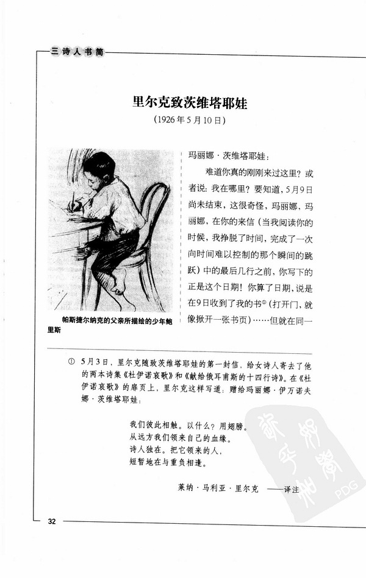
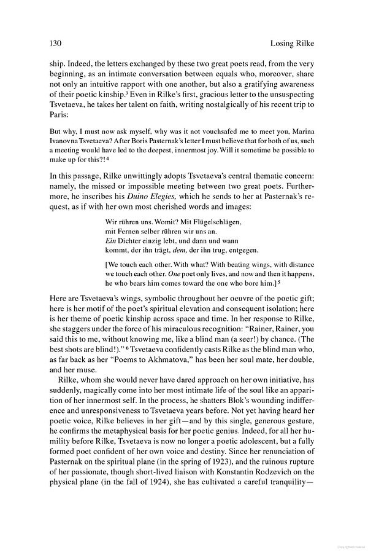

刘文飞班长与哈雷将军里尔克
|  |
刘文飞译文 |
刘文飞的译文：
我们彼此相触，以什么？用翅膀。
从远方我们领来自己的血缘。
诗人独在。把它领来的人，
短暂地与重负相逢。
http://book.douban.com/subject/1016336/，32页
德语原文：
Für Marina Zwetajewa
Wir rühren uns. Womit? Mit Flügelschlägen,
mit Fernen selber rühren wir uns an.
Ein Dichter einzig lebt, und dann und wann
kommt, der ihn trägt, dem, der ihn trug, entgegen.
应该是刘文飞所依据的俄语译文：
Марине Ивановне Цветаевой
Касаемся друг друга. Чем? Крылами.
Издалека ведем свое родство.
Поэт один. И тот, кто нес его,
встречается с несущим временами.
http://www.tsvetayeva.com/letters/let_rajner_7.php
Dasha据德语试译文字：
为玛丽娜•茨维塔耶娃而作
我们彼此相触。藉什么？藉翼翅拍击，
藉远方本身，我们彼此相触。
一个诗人独自活着，但时而，
迎向着背负过他的，是那背负着他的。
英语译文一种（谨供不懂德语的豆友参考）：
We touch each other.With what?
With beating wings, with distance we touch each other.
One poet only lives,and now and then it happens,
he who bears him comes toward the one who bore him.
http://books.google.com/books?id=0VzbZ_IYjc0C&pg=PA130
|  |
英译一种 |
谨附老笑话一则：
营长对值班军官：明晚大概8点左右，哈雷彗星将可能在这个地区看到，这种彗星每隔76年才能看见一次。命令所有士兵穿着野战服在操场上集合，我将向他们解释这一罕见的现象，如果下雨的话，就在礼堂集合，我为他们放一部有关彗星的影片。
值班军官对连长：根据营长的命令，明晚8点哈雷彗星将在操场上出现，这种彗星每隔76年才能看见一次。如果下雨的话，就让士兵穿着野战服列队前往礼堂，这一罕见的现象将在那里出现。
连长对排长：根据营长的命令，明晚8点，非凡的哈雷彗星将身穿野战服在礼堂中出现。如果操场上下雨的话，营长将下达另一个命令，这种命令每隔76年才会出现一次。
排长对班长：明晚8点，营长将带着哈雷彗星在礼堂出现，这是每隔76年 才有的事。如果下雨的话，营长将命令哈雷彗星穿上野战服到操场上去。
班长对士兵：在明晚8点下雨的时候，著名的76岁哈雷将军将在营长的陪同下身着野战服，开着他那“彗星”牌汽车，经过操场前往礼堂。
傻按：恐怕里尔克=营长；俄译本=值班军官/连长；刘文飞=班长。
![转发 8](https://www.douban.com/share/recommend?sanity_key=_f637c&apikey=&object_kind=1015&name=%E5%88%98%E6%96%87%E9%A3%9E%E7%8F%AD%E9%95%BF%E4%B8%8E%E5%93%88%E9%9B%B7%E5%B0%86%E5%86%9B%E9%87%8C%E5%B0%94%E5%85%8B&image=https%3A%2F%2Fimg9.doubanio.com%2Fview%2Fnote%2Fsmall%2Fpublic%2Fp175578796-1.jpg&target_action=0&redir=https%3A%2F%2Fwww.douban.com%2Fnote%2F175578796%2F&object_id=175578796&heading=%E8%BD%AC%E5%8F%91%E5%88%B0%E8%B1%86%E7%93%A3&target_type=rec&btn_text=%E8%BD%AC%E5%8F%91&href=https%3A%2F%2Fwww.douban.com%2Fnote%2F175578796%2F&action_props=%7B%22note_url%22%3A%22https%3A%5C%2F%5C%2Fwww.douban.com%5C%2Fnote%5C%2F175578796%5C%2F%22%2C%22note_title%22%3A%22%E5%88%98%E6%96%87%E9%A3%9E%E7%8F%AD%E9%95%BF%E4%B8%8E%E5%93%88%E9%9B%B7%E5%B0%86%E5%86%9B%E9%87%8C%E5%B0%94%E5%85%8B%22%2C%22author_name%22%3A%22Dasha%22%7D&curl=&type=com.douban.people&properties=%7B%22href%22%3A%22https%3A%5C%2F%5C%2Fwww.douban.com%5C%2Fpeople%5C%2FDasha%5C%2F%22%2C%22name%22%3A%22Dasha%22%2C%22uid%22%3A%221666065%22%7D&desc=%E5%88%98%E6%96%87%E9%A3%9E%E7%9A%84%E8%AF%91%E6%96%87%EF%BC%9A+%E6%88%91%E4%BB%AC%E5%BD%BC%E6%AD%A4%E7%9B%B8%E8%A7%A6%EF%BC%8C%E4%BB%A5%E4%BB%80%E4%B9%88%EF%BC%9F%E7%94%A8%E7%BF%85%E8%86%80%E3%80%82+%E4%BB%8E%E8%BF%9C%E6%96%B9%E6%88%91%E4%BB%AC%E9%A2%86%E6%9D%A5%E8%87%AA%E5%B7%B1%E7%9A%84%E8%A1%80%E7%BC%98%E3%80%82+%E8%AF%97%E4%BA%BA%E7%8B%AC%E5%9C%A8%E3%80%82%E6%8A%8A%E5%AE%83%E9%A2%86%E6%9D%A5%E7%9A%84%E4%BA%BA%EF%BC%8C+%E7%9F%AD%E6%9A%82%E5%9C%B0%E4%B8%8E%E9%87%8D%E8%B4%9F%E7%9B%B8%E9%80%A2%E3%80%82+http%3A%2F%2Fbook.douban.com%2Fsubject%2F1016336%2F%EF%BC%8C32%E9%A1%B5+%E5%BE%B7%E8%AF%AD%E5%8E%9F%E6%96%87%EF%BC%9A+F%C3%BC...){kind=link}
kommt dem entgegen就是迎向的意思吗？
是，迎面而来。entgegenkommen。
thx

One poet only lives,and now and then it happens,
he who bears him comes toward the one who bore him.
如果按照英文：
一个诗人只是活着，常常是这样
那背负他的迎向（已）背负了他的
英译本没错，Dasha的也没错，再细读。貌似Dasha“迎向”后面多了个“着”字。
最后一句英译和Dasha兄是一样的，但是倒数第二行似乎有区别。
嗯，Dasha译成“独自”的德语原词是“einzig”，所谓“真主独一”的时候，“独一”就是这个“einzig”，杜登—牛津德英词典的释义：
einzig /';/ 1. Adj. a) (alleinig) only; single; (intensivierend nach ein od. kein) single; der einzige Sohn the only son; unser Einziger/unsere Einzige our only son/daughter; nur ein Einziger only one; nicht ein einziges Stück not one single piece; es blieb nur ein einziger Ausweg there was only one way out; ihre einzige Freude war ihre Tochter her daughter was her one and only joy; das Einzige, was er sah, war ... the only thing he saw was ...;
b) (völlig) complete; absolute; one long <torment>;
c) (geh.: unvergleichlich) unique; unparalleled; einzig in ihrer/seiner Art unique in her/his/its [own] way.
2. adv. a) (ganz besonders) singularly; extraordinarily; ein einzig schöner Tag an extraordinarily beautiful day;
b) (ausschließlich) only; das einzig Wahre the only thing; das einzig Vernünftige/Richtige the only sensible/right thing [to do]; einzig und allein nobody/nothing but; solely; einzig ihm wollte sie sich anvertrauen he was the only one she would confide in
(c) 1999 Dudenverlag
傻复按：德语的不及物动词后面能不能接宾语物，不能按照这个“及物/不及物”的字面来判断；德语的形容词和副词修饰名词还是动词，情况亦复如是。
除了最后一句，刘译跟俄译准确吻合。鉴定完毕。
也来凑个热闹：
Wir rühren uns. Womit? Mit Flügelschlägen,
我们彼此相触。藉什么？藉翼翅拍击，
mit Fernen selber rühren wir uns an.
藉远方本身，我们彼此相触。（这里的anrühren和第一行的rühren还是有细微差别，多了一丝过程，有”跨越距离触手相抚“的意思，而相比之下，前面则更单纯地表示“相抚”，建议精确一下两个动词的差别）
Ein Dichter einzig lebt, und dann und wann
一个诗人独自活着，但时而，（这里的einzig，翻成”独自“虽然不能算错，但感觉还是缺失了einzig的其他含义，”独自“有”孤独“、”孑然“的意思，但einzig更有”独一无二“、”非此不可“的隐含意思，是否还能找到一个能把这两层含义都囊括进去的副词？）
kommt, der ihn trägt, dem, der ihn trug, entgegen.
迎向着背负过他的，是那背负着他的。（”迎向“读起来有点拗口，”遇见“、”邂逅“呢？）
不过前面的刘译实在是让人汗不敢出啊。
恭迎美杜莎（别拿眼睛看Dasha哇）：rühren好像更多强调的是隔空的“打动”，anrühren是接触性的，Dasha都译成“相触”，本想强调两个词的词形的“相近”、“相亲”，看来还是顾此失彼；einzig，就像Dasha在前面回复adieudusk同学时提到了“真主独一”，因为已经使用了数词“一（个诗人）”，所以后面没有使用“独一”，看来用“独一”也感觉不错；“迎向”虽然拗口，但“邂逅”就会忽略了“entgegen”。
关于刘译，回桃花岛主与美杜莎，这首诗，七卷本《里尔克全集》（也是目前最“全”的“全集”）不存，但是，这7卷本是1992年修订的，依照时间，编辑者应该获得茨维塔耶娃的信息，就像其在第七卷里大量“补遗”一样补充此诗，但不知道为什么没这么做，所以，这首诗也是幸亏刘在书中的译文，Dasha才得以找到德语原文，因此，心怀感激。所以，dasha并不想指出刘的“错译”（如果说刘译本错译，Dasha可以毫不客气地说，《三诗人书简》里但凡涉及里尔克德语原文，没有一句是完全正确的），所以，dasha粘贴了一个笑话，但是，之所以Dasha一直反对据其他语种译本转译，比如曹元勇据英译本转译《马尔特手记》，也是这个笑话所表达的原因。请看，俄译本偏差德语原本一点点（比如第二行），刘译本再偏差俄译本一点点（比如最后一行），如此下去，北极还不变成南极啦。
倒，看来刘班长不把北极“偏移”成南极死不罢休：https://book.douban.com/annotation/14736345/
翻了翻原文，沒看到這個注。不過到發現所注的這句話原文應該是“說是在10日收到了我的書”。。。
2011-10-03 16:43:26: Dasha 倒，看来刘班长不把北极“偏移”成南极死不罢休：https://book.douban.com/annotation/14736345/
——————————————————————————
这正好证明：中译者已经在新本里及时更正了以前的误译，这样，中译就跟俄译完全吻合了。至于俄译与里尔克原文的偏差，也不该问罪于中译者吧。
“反对据其他语种译本转译”，Dasha提得非常好，这自然也是翻译的理想状态。遗憾的是，并非每位译者都能精通多国语言，有这种本领的人又未必能够并且愿意从事清寂的文学翻译。
Dasha拿来揶揄的例子（多年以前的误译在再版时已被矫正），其实反倒让人看见译者对于译事的细心，就像在细心编织一件心爱的袍子。可敬。
Dasha的“较真儿”也蛮可爱，结论如能下得从容些会更好。
岛主，亲：
“移动”一词不会联想到“联通”，“联想”一词也不会联想到“Lennove”，因为这两个词，要么词义宽泛，要么词性中庸，而“连亲”则不然：
【連親】犹连姻。《太平广记》卷二五九引 唐 韩琬 《御史台记·成敬奇》：“ 則天 乃命 王勃 試之，授校書郎，累拜監察大理正，與紫微令 姚崇 連親。”
========================
是为《汉语大词典》的释义。为避免人身攻击的嫌疑，为了就文字论文字，一下皆以姓氏拼音首字母称呼诸人物吧。
“连亲”，确实与“родство”更“亲近”了，但是，1926年，已过半百的老X头子给一个少妇诗人写诗用这样一个词，妥当吗？盲目轻信一种译本，适合吗？比如Dasha昨天晚上刚发的书评，另一位L先生（汉语考校功夫西学发扬的一个成功案例），同样是据其他语种译本转译，为什么能十分贴近原文？诚如其自称参考多家译本，诚如Dasha披露的其人甚至再用“翻译网页”稽核。为什么那位L先生能，而这位L先生不能。不加辨别地抱着一种译本不放，就是完全吻合了，也不过是里尔克所说的“der gelehrige und geschickte Affe des Gesetzes”。两位L先生搅在了一起，Dasha却不得不想起第三位L先生，也就是说，Dasha反对据译本转译，也并不能保证Dasha不反对据原本翻译。对原本的不加甄别（比如我们汉语中版本学里提及的“善本”、“珍本”、“孤本”什么的），对所译文字的背景不加考察，同样会导致令人笑掉大牙的讹误，比如：“Ode an Bellman”，这第三位L先生就想当然地弄出了个“颂敲钟人”，“Bellman”是“敲钟人”吗，在德语里肯定不是，那么“Bellman”何许人？是卡尔•米凯尔•贝尔曼（Carl Michael Bellman，1740-1795），瑞典诗人、作曲家，死于肺结核。
说到这儿，却又偏偏冒出个过气而又不甘寂寞的诗人Z先生（或曰B先生），对汉译本极度不满，然后据诸种汉译本重新“翻译”成B氏版汉译本……如果“理想”都成为了“状态”，三藏法师也没必要连累着猴啊猪啊什么的一路西行了，在大唐长安把鸠摩罗什什么的重新“翻译”成C氏佛典不就皆大欢喜。
岛主，亲：
“移动”一词不会联想到“联通”，“联想”一词也不会联想到“Lennove”，因为这两个词，要么词义宽泛，要么词性中庸，而“连亲”则不然：
【連親】犹连姻。《太平广记》卷二五九引 唐 韩琬 《御史台记·成敬奇》：“ 則天 乃命 王勃 試之，授校書郎，累拜監察大理正，與紫微令 姚崇 連親。”
========================
是为《汉语大词典》的释义。为避免人身攻击的嫌疑，为了就文字论文字，一下皆以姓氏拼音首字母称呼诸人物吧。
“连亲”，确实与“родство”更“亲近”了，但是，1926年，已过半百的老X头子给一个少妇诗人写诗用这样一个词，妥当吗？盲目轻信一种译本，适合吗？比如Dasha昨天晚上刚发的书评，另一位L先生（https://book.douban.com/review/5118770/），同样是据其他语种译本转译，为什么能十分贴近原文？诚如其自称参考多家译本，诚如Dasha披露的其人甚至再用“翻译网页”稽核。为什么那位L先生能，而这位L先生不能。不加辨别地抱着一种译本不放，就是完全吻合了，也不过是里尔克所说的“der gelehrige und geschickte Affe des Gesetzes”。两位L先生搅在了一起，Dasha却不得不想起第三位L先生，也就是说，Dasha反对据译本转译，也并不能保证Dasha不反对据原本翻译。对原本的不加甄别（比如我们汉语中版本学里提及的“善本”、“珍本”、“孤本”什么的），对所译文字的背景不加考察，同样会导致令人笑掉大牙的讹误，比如：“Ode an Bellman”，这第三位L先生就想当然地弄出了个“颂敲钟人”，“Bellman”是“敲钟人”吗，在德语里肯定不是，那么“Bellman”何许人？是卡尔•米凯尔•贝尔曼（Carl Michael Bellman，1740-1795），瑞典诗人、作曲家，死于肺结核。
说到这儿，却又偏偏冒出个过气而又不甘寂寞的诗人Z先生（或曰B先生），对汉译本极度不满，然后据诸种汉译本重新“翻译”成B氏版汉译本……如果“理想”都成为了“状态”，三藏法师也没必要连累着猴啊猪啊什么的一路西行了，在大唐长安把鸠摩罗什什么的重新“翻译”成C氏佛典不就皆大欢喜。
Dasha的最新日记 · · · · · · ( 全部 )
- “二”从何来——略论意译 (39人喜欢)
- 里尔克2首意大利语诗草【求板砖】 (23人喜欢)
- 里尔克6首俄语诗（稿本A）+草稿2篇 (44人喜欢)
- 里尔克1901年1月24日夜写给褒拉的信 (24人喜欢)
- 唉，意译 (12人喜欢)
热门话题 · · · · · · ( 去话题广场 )
- 我家自有清凉法 330.8万次浏览
- 回想高考后的漫漫长假 236.8万次浏览
- 我家的床头柜替代方案 96.6万次浏览
- 看展记 9941.2万次浏览
- 豆瓣野生艺术摄影大赛 2049.7万次浏览
- 录取通知书盲盒大赏 新话题
- 影视剧中那些离谱的“主角光环” 新话题 · 611次浏览
- 挖出时间胶嚢 1.2万次浏览
- > 我被邀请参与的话题(0)
- + 发起新话题